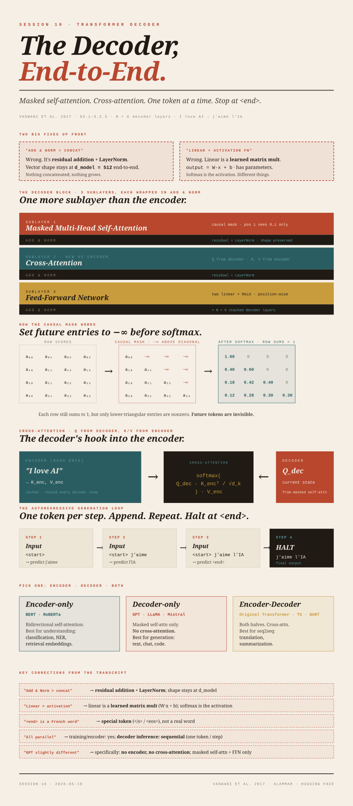

The Decoder,
End-to-End.
Masked self-attention + cross-attention. One token at a time. Stop when the model emits <end>.
<end>.
(1) "Add & Norm is concatenation" — no. Add & Norm is residual addition + LayerNorm. Vector shape stays at
d_model = 512 end-to-end. (2) "Linear is an activation function" — no. Linear is a learned matrix multiplication (Wx + b). Softmax is the activation. Both fixes matter because they're load-bearing for understanding what the layers actually do.
Where we are
Sessions 7–9 covered the encoder: tokenize → embed → add positional encoding → N=6 layers of (multi-head self-attention + FFN) → one rich vector per input token. Session 10 is the other half of the original 2017 Transformer — the decoder stack that consumes the encoder's output and produces a target-language sequence one token at a time.
The example the lecturer used (and we'll follow) is English → French translation: encoder reads I love AI, decoder produces j'aime l'IA.
What the decoder block contains
Each decoder layer has three sublayers (one more than the encoder), in order:
Each of those three sublayers is wrapped in Add & Norm (residual addition + LayerNorm). The whole layer stacks N = 6 times.
The lecturer said Add & Norm is "concatenation" — "the output of everything we are adding and then we are passing. ANN will give multi-dimension, so we are basically concatenating everything." Wrong on two counts: (a) the residual step is element-wise addition of the sublayer's input to its output (same shape, same dimension count), not concatenation; (b) LayerNorm then re-centers and re-scales each token's vector so its mean is 0 and variance is 1. Nothing changes shape. The vector stays at
d_model = 512 throughout. (Vaswani et al. 2017, §3.1; Ba, Kiros, Hinton 2016 for LayerNorm.)
Masked self-attention — the only thing that changes vs the encoder
Encoder self-attention is bidirectional: every token attends to every other token. That's fine for understanding a complete input.
Decoder self-attention is causal (also called masked): token at position i can only attend to positions 0, 1, …, i — never to future positions. The reason is operational: the decoder's job is to predict the next token. If it could attend to the answer during training, it would learn nothing.
How the mask actually works
After computing the raw scores Q · Kᵀ / √d_k you get an n × n matrix. Before softmax, every entry above the diagonal is set to −∞. The softmax of −∞ is 0, so the row for position i puts weight only on positions 0…i:
Each row still sums to 1 — but only the lower-triangular entries are nonzero. Future tokens are invisible. The same matrix multiply runs as in the encoder; the mask just zeroes out future-position weights. (The numbers above are a computed example: row 1 puts 27% weight on position 0 and 73% on position 1; row 2 concentrates 77% on its own position; row 3 spreads across all four.)
Cross-attention — the decoder pulling from the encoder
The lecturer's framing is correct and worth keeping: "with respect to the word I'm about to produce on the French side, which English word should I focus on?"
Mechanically:
- Query (Q) comes from the decoder (output of the masked-self-attention sublayer in the current decoder layer).
- Key (K) and Value (V) come from the encoder's final output.
softmax( Q_dec · K_encᵀ / √d_k ) · V_enc Q FROM DECODER · K, V FROM ENCODER
The asymmetry — Q from one side, K/V from the other — is what makes it "cross". A decoder query asks the encoder "which of your tokens is most relevant to me right now?" and gets back a weighted mixture of the encoder's values.
The encoder's K/V are computed once, after the encoder finishes processing the source sentence. They're reused at every decoder step. Cross-attention is how the source sentence stays "alive" inside the decoder loop without being re-encoded each step.
The autoregressive generation loop
The lecturer walked through this with I love AI → j'aime l'IA. Here's the loop in full:
Step 0 — Encoder runs once
Tokenize I love AI, embed, add positional encoding, run all 6 encoder layers. Output: three 512-dim vectors (one per source token). These are the encoder K/V used by every cross-attention step below.
Step 1 — Decoder input is <start> only
- Embed
<start>, add positional encoding (position 0). - Masked self-attention — trivial (one token, attends to itself).
- Cross-attention: query is the
<start>vector; K, V from encoder. Softmax probably picks out I as most relevant. - Feed-forward.
- Linear + softmax over the French vocabulary → probability distribution over all ~30,000 French tokens. Pick the highest-probability token (or sample). Output:
j'aime.
Step 2 — Decoder input is <start> j'aime
- Embed both, add positional encodings (positions 0 and 1).
- Masked self-attention —
<start>sees only itself;j'aimesees itself and<start>. - Cross-attention from each decoder position to the (same, cached) encoder K/V. The
j'aimequery likely focuses on love / AI more than I. - Feed-forward, linear, softmax → next French token. Output:
l'IA.
Step 3 — Decoder input is <start> j'aime l'IA
Repeat. This time the model's best prediction is the special <end> token.
Step 4 — <end> emitted → stop
Generation halts. Output sequence: j'aime l'IA.
The lecturer said "in French we have 30,000 vocabulary, let's say there is one word called end." There isn't.
<end> (often written </s> or <eos>) is a special token added to the vocabulary alongside real words; the tokenizer reserves an ID for it, and the model is trained to emit it when the sequence is complete. Same for <start> (<bos>/<s>). Named slots in the vocabulary, not real words.
The lecturer said "everything in Transformer happens parallelly". That's true of training (the full target sequence is known; teacher forcing evaluates the whole decoder in parallel) and of encoder inference (the encoder processes all source tokens at once). It's false of decoder inference: tokens must be generated one at a time because each step's input depends on the previous step's output. Modern systems cache the K and V of previously-generated tokens (the KV cache) so each step only computes attention for the new token — but the loop itself is still sequential.
Worked example — what cross-attention focuses on at each step
To make the loop concrete, here's the same I love AI → j'aime l'IA example with illustrative attention weights and illustrative softmax probabilities. The actual numbers a trained model produces depend on its learned weights; these aren't measured outputs, they're stand-ins so you can see the shape of what's happening at each step.
Step 1. Decoder input: [<start>]. Cross-attention from the <start> position over the three encoder tokens:
| Source token | Cross-attention weight (illustrative) |
|---|---|
| I | 0.7 |
| love | 0.2 |
| AI | 0.1 |
After feed-forward, linear, softmax over the ~30,000-token French vocabulary:
| Candidate French token | Probability (illustrative) |
|---|---|
| j'aime | 0.85 |
| Le | 0.03 |
| Bonjour | 0.02 |
| (≈30,000 others) | ≈ 0.10 total |
Output: j'aime. French j'aime is the elided form of je aime, meaning "I love" — one French token corresponds to two English ideas, which is why a sensible attention pattern from this single decoder position could plausibly emphasise I and love. The actual focus pattern is a property of the trained weights, not something you can derive from the source sentence alone.
Step 2. Decoder input: [<start>, j'aime]. Masked self-attention now has two positions; the mask blocks future positions:
<start> | j'aime | |
|---|---|---|
<start> | ✓ | ✗ (masked) |
j'aime | ✓ | ✓ |
Cross-attention from the j'aime decoder position over the encoder K/V:
| Source token | Cross-attention weight (illustrative) |
|---|---|
| I | 0.1 |
| love | 0.2 |
| AI | 0.7 |
Output: l'IA.
Step 3. Decoder input: [<start>, j'aime, l'IA]. The model's best next prediction is <end> (illustrative probability ~0.91). Loop stops.
| Step | Decoder input | Cross-attention focus | Output |
|---|---|---|---|
| 1 | [<start>] | I | j'aime |
| 2 | [<start>, j'aime] | AI | l'IA |
| 3 | [<start>, j'aime, l'IA] | (source consumed) | <end> |
Real attention patterns are messier than these tables. Distributions are rarely as peaked as 0.7/0.2/0.1; multiple heads in the same layer attend to different things in parallel; many heads turn out to learn syntactic or positional patterns that have nothing to do with the "which English word does this French word translate" intuition. The tables above are a useful first-order mental model, not a faithful picture of what any specific trained model does. Clark et al. 2019, What Does BERT Look At? arXiv:1906.04341 — the canonical sober look at attention-head behaviour.
Training vs inference — the parallelism difference, fully explicit
This is worth pulling out of the correction box above because it's a frequent confusion point.
Training (teacher forcing)
The decoder is fed the entire correct target sequence shifted one position right: [<start>, j'aime, l'IA] as input, with the model trained to predict [j'aime, l'IA, <end>] as output. The full target is known up front, so the causal mask is the only thing needed to stop each position from "cheating" by reading its own answer. Every position is computed in one parallel forward pass, loss summed across positions. This is what makes Transformer training fast.
Inference (autoregressive)
No ground-truth target exists — the decoder is generating it. Each step has to wait for the previous step's output before it has an input for the next position. Tokens come out one at a time. The KV cache makes each step cheaper (don't recompute K/V for tokens that haven't changed), but the loop is fundamentally sequential. This is why LLM latency scales with output length, not input length.
Same model, same weights, same mask — different evaluation pattern.
The linear + softmax head
Two things sit between the final decoder layer and the predicted token:
- Linear projection — a learned matrix of shape
(d_model, vocab_size)that takes the last decoder layer's 512-dim output vector and projects it into avocab_size(~30,000) logit vector — one number per word in the target vocabulary. - Softmax — normalizes those logits into a probability distribution over the vocabulary.
The lecturer said "softmax is the activation function. Linear, uh, is just a flattening … so linear is again activation function, linear, and then softmax." No. Linear is a learned matrix multiplication (
output = W·x + b) — a parameterized layer with weights and biases. Softmax is the activation/output nonlinearity. They're different kinds of things. "Flattening" is a third thing again (reshape multi-dim → 1-D), not relevant here — the decoder's per-token output is already a vector.
Think of the linear layer as a Map<Integer, double[]> applied to the input vector — a learned function that produces one logit per vocabulary token. The softmax that follows is a pure utility that normalizes those numbers to a probability distribution. The linear layer has parameters; softmax has none.
Temperature — a glimpse forward
At inference, instead of sampling directly from softmax(logits), the model usually divides the logits by a temperature T first:
T → 0— distribution collapses onto the argmax. Always pick the highest-probability token. Deterministic, repetitive.T = 1— standard softmax. Sample according to the trained distribution.T > 1— distribution flattens. Less probable tokens become competitive. More creative, less coherent.
Temperature is a sampling-time knob; it doesn't change the trained weights. The lecturer's verbal description was right; the formal mechanism is just that one division.
The full architecture in one picture
Encoder once per input. Decoder loops once per output token, reusing the encoder's K and V on every step via cross-attention. The dashed terracotta arrow on the right is the autoregressive loop — each emitted output token is appended to the decoder's input on the next step.
Cross-checks against the canonical diagrams
Two reference pictures are bundled with this session — worth looking at side-by-side with the ASCII diagram above.

This is Figure 1 from the original paper. Mapping it to the prose above: the left tower is the encoder (one self-attention sublayer + FFN per layer, N×); the right tower is the decoder (masked self-attention + "multi-head attention" / cross-attention + FFN per layer, N×). The horizontal arrows from encoder to the middle decoder sublayer carry the encoder's K and V. "Outputs (shifted right)" at the bottom of the decoder is the teacher-forcing setup described above.

This is Jay Alammar's illustration of a two-layer stack (the paper uses N=6). It makes the per-layer sublayer count explicit: each encoder block has two sublayers (self-attention, FFN), each decoder block has three (self-attention, encoder-decoder attention, FFN). The arrows between the encoder column and the encoder-decoder attention sublayer of each decoder block are the same K/V flow shown in the Vaswani figure.
Encoder-only, decoder-only, encoder-decoder
The 2017 paper has both halves because translation needs both: understand source, generate target. You don't always need both:
| Architecture | Example models | Best for |
|---|---|---|
| Encoder-only | BERT, RoBERTa | Understanding: classification, NER, embeddings. |
| Decoder-only | GPT, LLaMA, Mistral | Generation: text, chat, code. |
| Encoder-decoder | Original Transformer, T5, BART | Sequence-to-sequence: translation, summarization. |
GPT-style models use only the decoder stack, and crucially the cross-attention sublayer is removed (there's no encoder to attend to). What's left per layer is: masked self-attention + FFN + Add & Norm. That's why the lecturer hedged with "the GPT architecture is slightly different than what you see here." The difference is specifically: no cross-attention, no encoder, masked self-attention only. The autoregressive generation loop is the same.
Interview-level summary
Three questions the lecturer says you should expect:
- What is attention? A weighted aggregation where the weights are learned at runtime from the data: each token attends to every other token with weights that capture relevance.
- What's the difference between encoder and decoder? Encoder uses bidirectional self-attention; decoder uses masked (causal) self-attention. Decoder has an extra cross-attention sublayer (Q from decoder, K/V from encoder).
- Encoder-only, decoder-only, or both? Pick by task. Understanding → encoder (BERT). Generation → decoder (GPT). Translation/summarization → both (T5, original Transformer).
Hugging Face — the brief tour at the end
The lecturer closed with five minutes on Hugging Face, the de facto open-source hub for ML models, datasets, and deployment. The mental model: GitHub for models. The current counts the lecturer cited (~2.78M models, ~954k datasets) shift weekly; the exact numbers aren't worth memorizing.
Key things to know
- Models are organized by task on the Tasks sidebar. Filter by task, then sort by Most Downloads as a community trust heuristic. Trusted brands (OpenAI, Microsoft, Google, Meta, Anthropic) get name recognition; for the rest, lean on downloads + recency + the model card's documentation.
transformersis the Python package that gives you a one-line API for almost any model on the Hub:
The model name is the only thing that changes; the rest of the code stays the same.from transformers import pipeline pipe = pipeline("text-generation", model="gpt2") pipe("The quick brown fox")- Spaces is the deployment side — a hosted environment for running an app (Gradio, Streamlit, or Docker) with optional GPU. Cheaper than the major clouds for prototypes.
- Datasets is the same pattern for training data: filter by modality, search, download via the
datasetspackage. - Access tokens under your profile settings; required for private models, rate-limit headroom, and authenticated downloads. Never paste your token into source files or screenshots — treat it like a password.
The transformers Python package is roughly what Spring Boot Starters are for Java — a single dependency that wires up sane defaults so you can call pipeline("task-name", model="name") and have everything (tokenizer, model weights, inference loop) configured. The customization points beneath (custom tokenizer, custom generation config) exist but you usually don't touch them.
Where we go next
Session 10 closes the architectural arc. From here the course pivots to applications:
- Chatbot v1 with LangChain + RAG — retrieve relevant chunks from your own documents and stuff them into the LLM's context.
- Chatbot v2 with Graph RAG (Neo4j) — replace the vector store with a graph database for relational retrieval.
- Chatbot v3 with LangGraph — explicit agent loops (plan, tool-call, reflect).
- Workflow automation on Databricks.
- Observability — token, latency, and cost tracking for LLM apps.
The architecture from Sessions 7–10 is the foundation. Everything from here builds on it without needing to reopen it.

Glossary
- Autoregressive generation
- Producing a sequence one token at a time, where each step's input includes all previously generated tokens. The decoder loops; there's no way to skip ahead.
- Causal mask (causal attention, masked self-attention)
- Attention configured so that position
ican only attend to positions0…i. Implemented by setting the upper triangle of the score matrix to−∞before softmax. - Cross-attention (encoder-decoder attention)
- Attention sublayer where Q comes from the decoder and K, V come from the encoder. The decoder's "hook" into the source sentence.
- Add & Norm
- A residual connection (element-wise add input to sublayer output) followed by LayerNorm. Wraps every encoder and decoder sublayer. Does NOT change vector shape.
- LayerNorm
- Normalizes a vector to mean 0, variance 1, then applies a learned scale and bias per dimension. Stabilizes training across layers.
- KV cache
- Inference-time optimization: cache the K and V tensors for tokens already generated, so each new step only computes K and V for the new token.
- Linear layer
- A learned matrix multiplication:
output = W·x + b. Has parameters. NOT an activation function. - Softmax
- An activation/output function that converts a vector of real-valued scores into a probability distribution:
softmax(x_i) = exp(x_i) / Σ_j exp(x_j). - Logit
- The raw, pre-softmax score the model outputs for a token. One logit per vocabulary entry.
- Temperature
- Sampling-time hyperparameter that divides logits before softmax. Low T → sharper, more deterministic. High T → flatter, more creative.
- Special tokens (<start>, <end>, <pad>)
- Named slots in the vocabulary used for control (begin sequence, end sequence, padding). Not real words but reserved IDs the tokenizer and model know about.
- Teacher forcing
- Training trick where the decoder is fed the ground-truth previous tokens instead of its own previous predictions. Lets training run in parallel over the whole target sequence.
- Hugging Face Hub
- The dominant open-source platform for sharing ML models, datasets, and demos. The
transformerspackage is the standard Python client.